认知偏差知识手册一、决策、信念与行为偏差1. 不明确性效应 Ambiguity Effect2. 锚定效应 Anchoring Effect3. 注意力偏差 Attentional Bias4. 获得性启发 Availability Heuristic5. 可获性层叠 Availability Heuristic6. 逆火效应 Backfire Effect7. 从众效应 Bandwagon Effect8. 信念偏差 Belief Bias9. 选择支持偏差 Choice-Supportive Bias10. 确认偏差 Confirmation Bias11 知识的诅咒 Curse of Knowledge12. 诱饵效应 Decoy Effect13. 差异偏差 Distinction Bias14. 禀赋效应 Endowment Effect15. 功能固着 Functional Fixedness16. 巴纳姆效应 Barnum Effect17. 框架效应 Framing Effect18. 频率错觉 Frequency Illusion19. 后见之明偏差 Hindsight Bias20. 当下偏差 Current Moment Bias21. 可辨识受害者效应 Identifiable Victim Effect22. 宜家效应 IKEA Effect23. 影响力偏差 Impact Bias24. 资讯偏差 Information Bias25. 沉没成本谬误 Sunk Cost Fallacy26. 损失趋避 Loss Aversion27. 单纯接触效应 Mere Exposure Effect28. 负面偏差 Negativity Bias29. 忽略可能性 Neglect of Probability30. 乐观偏差 Optimism Bias31. 鸵鸟效应 Ostrich Effect32. 规划谬误 Planning Fallacy33. 对抗心理 Reactance34. 自制偏差 Restraint Bias35. 韵律当理由效应 Rhyme as Reason Effect36. 风险补偿 Risk Compensation37. 选择性知觉 Selective Perception38. 幸存者偏差 Survivorship Bias39. 零风险偏差 Zero-Risk Bias40. 感知价值偏差 Perceived Value Bias41. 分析瘫痪 Analysis Paralysis42. 稀缺效应 Scarcity Effect43. 流畅性启发 Fluency Heuristic二、社会偏差44. 行动者-观察者偏差 Actor-Observer Bias45. 达克效应 Dunning–Kruger Effect46. 错误共识效应 False Consensus Effect47. 基本归因谬误 Fundamental Attribution Error48. 晕轮效应 Halo Effect49. 群内偏差 Ingroup Bias50. 权威偏见 Authority Bias 51. 得寸进尺法 Foot-in-the-Door Technique三、记忆错误与偏差52. 谷歌效应 Google Effect53. 幽默效应 Humor Effect54. 真相错觉效应 Illusion of Truth Effect55. 峰终法则 Peak-End Rule56. 图片优势效应 Picture Superiority Effect57. 首因效应 Primacy Effect58. 雷斯多夫效应 Von Restorff Effect59. 蔡格尼效应 Zeigarnik Effect四、统计与几率偏差60. 基本比率谬误 Base Rate fallacy61. 赌徒谬误 Gambler's Fallacy62. 热手谬误 Hot-Hand Fallacy63. 对样本数不敏锐 Insensitivity to Sample Size五、实验与研究偏差64. 取样偏差 Sampling Bias65. 观察者期望效应 Observer-Expectancy Effect66. 社会期许偏差 Social Desirability Bias67. 遗漏变数偏差 Omitted-Variable Bias
💡决策、信念与行为偏差这些偏差多半会影响信念的形成、商业与经济决策、以及其他一般的人类行为它们是可复制与再现的，面临特定情境时，一般可预期人们会有相应的偏差倾向。
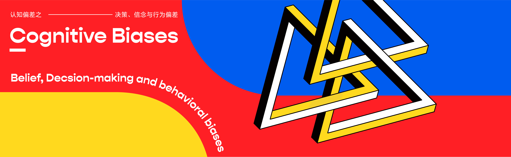
我们倾向于避免未知，决策时避开资讯不足的选项，通过添加明确的细节来最大程度地减少歧义，从而提高转化率
🔺 示例
CTA 按钮应在其旁边包含信息性标签，以清除不确定性。
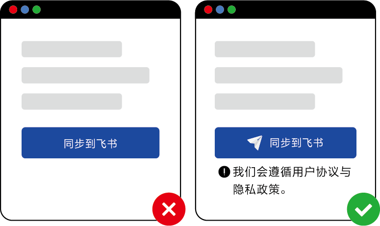
人类在进行决策时，会过度偏重先前取得的资讯（这称为锚点），即使这个资讯与这项决定无关。在进行决策时，人类倾向于利用此片段资讯（锚点），快速做出决定。
🔺 示例
通常被利用在消费场景中的认知偏差，通过前后对比来放大优惠感知，进而促进用户做出有利于我们的决策。
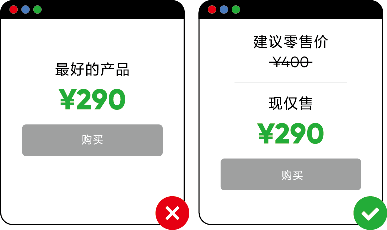
在检查所有可能的结果时，我们倾向于关注一些看起来合理且熟悉的事物，从而忽略了其他结果。
🔺 示例
你是否发布过一项你认为会造成意外后果的功能，然后你就只盯着这个后果？
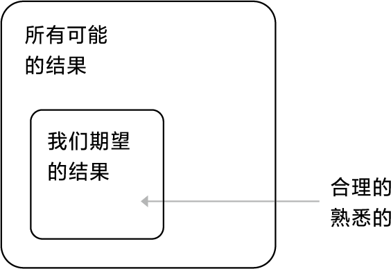
我们认为那些迅速跃入脑海的事情比那些不容易想起的事情更为常见和重要。因此，最近发生的、频繁发生的、极端的、被记住的事情比大多数信息更有影响力。
🔺 示例
通过创建一些与众不同的东西（在不影响一致性和熟悉度的情况下）让你的设计被记住。
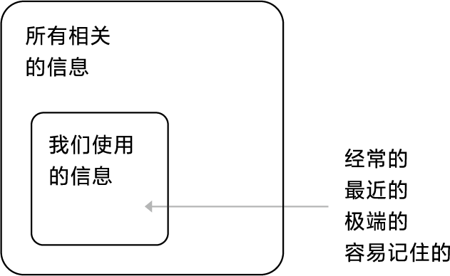
这个心理效应有一个更简单的描述，叫做三人成虎，也就是一件事越常被公开谈论，人们就越相信这件事。
🔺 示例
创建一个醒目的标语，并确保重复多次。如果可能，这个标语以押韵结尾会更好。
我们不能轻易改变人们的信念：与根深蒂固的信念相反的证据和论据无济于事，只会巩固信念的地位。
🔺 示例
通过情感辩论来影响他人的行为，不要尝试直接改变他们的信念。
我们经常会因为大多数人以同一种方式思考，而改变我们自己的想法。
🔺 示例
我们在设计中可以营造出一种群体选择的效果来吸引更多的用户，通过展示购买人数和滚动播放购买信息来体现出该商品的热门，让正在犹豫的用户「随大流」下单购买。
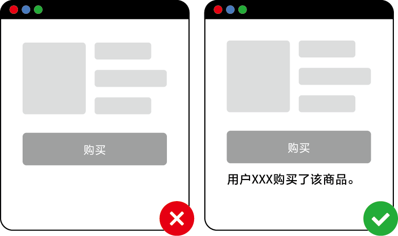
我们更倾向于接受与我们的先验知识相符的论点，而拒绝对该论点的反驳。
🔺 示例
谈论产品的好处时，不要夸大其词。如果它好到让人无法相信，那么人们将不会相信它。
做出决定后，我们倾向于称赞我们选择的选项，然后降级其他选项。
🔺 示例
在用户做出购买决定并成功达成交易之后，是用户分享产品（或添加评论）的绝佳时机；显示肯定的信息，并祝贺他们达成了这一步骤以激励用户。
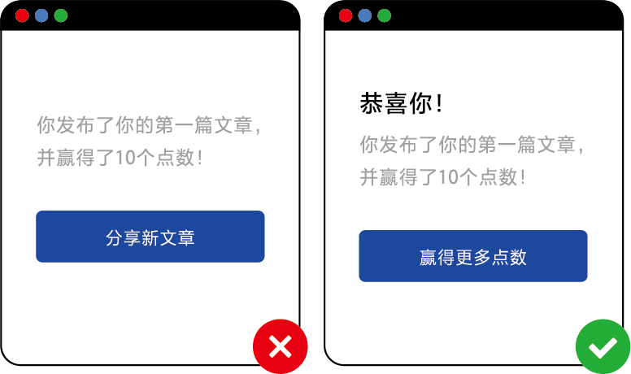
当人们本来就持有某种观点时，对这种观点的感知和注意度会被放大，会选择性地回忆或收集关于它的事例。人们对于自己原本就相信的观点会更容易接受，而把反面观点搁置在一旁。
🔺 示例
在用户研究中，当你的预设想法是用户对A设计的满意度比B设计更高时，在研究中你可能会更关注用户提到的A设计的优点、收集更多用户对于A设计的正面评价。当用户表示对A设计满意时，会觉得“果然是这样”。这种偏误会让你遗漏许多其它信息。
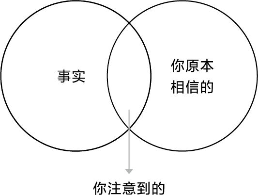
当我们是某个领域的专家时，会不知不觉假设其他人和我们具有相同的理解能力，尤其是对于专业术语的使用。
🔺 示例
考虑一下大多数用户，他们的技术水平可能不如你想象的那样，并且对你熟悉的事物也不太熟悉。
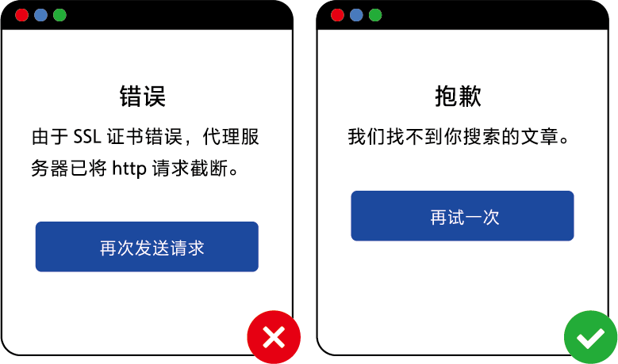
引入第三个选项來加强旧选项的吸引力。
🔺 示例
假设有产品 A 和 B，以下是顾客可以选择的选项：
(### ¥100 - A
(2) ¥300 - B
(3) ¥300 - A + B
在这个情景，（2）是“诱饵”，用来引导顾客选择“目标选项”（3）。
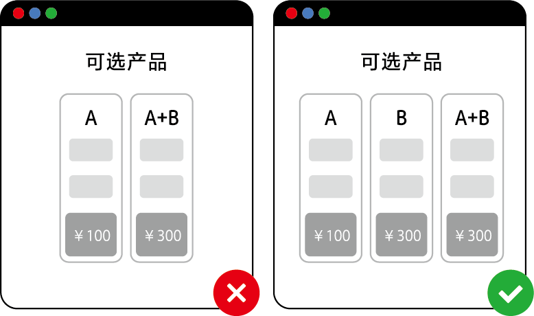
在有比较项存在的时候，我们对微小的差异变得敏感，而实际上，这些差异并不是很大。
🔺 示例
在竞争对手旁边展示你的产品优势，以便用户注意到差异，即使是一个很小的差异。
和没有拥有的物品相比，用户更倾向于保留自己拥有的物品。他们倾向于高估自己拥有的东西，而忽略其客观的市场价值。
🔺 示例
禀赋效应是损失规避（loss aversion）的一种表现形式，免费试用是禀赋效应的最常见用法。 一旦用户开始使用某种产品并投入了一段时间，那么在试用期结束时，他们很难放手而停止使用。当用户准备离开时，他们会觉得自己即将失去很多美好的事物。
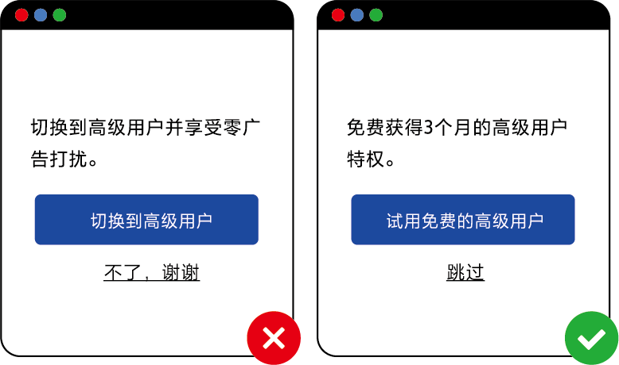
指个体在解决问题时往往只看到某种事物的通常功能，而看不到它其他方面可能有的功能。这是人们长期以来形成的对某些事物的功能或用途的固定看法。
🔺 示例
当产品挑战到现有的使用传统时，可能会引起一些可用性挑战。 请确保进行可用性测试，并尝试提前解决这些潜在的问题。
也称佛瑞效应。人们会对于他们认为是为自己量身定做的一些人格描述给予高度准确的评价，而这些描述往往十分模糊及普遍，以致能够放诸四海皆准适用于很多人身上。
🔺 示例
在产品文案中，尽量避免使用“大家”，“用户”等描述，使用诸如“你”，“你的”之类的可以更贴近用户，人们理解规范性信息时，存在一种选择性代入感，这种代入感会让人无意识地专注于选择贴合自己认知和经验，从而产生一种“我也是这样”的归属感。
框架效应的意义是，面对同一个的问题，在使用不同的描述后，人们会选择乍听之下较有利或顺耳的描述作为方案。
🔺 示例
在大多数情况下，正向表达（例如玻璃杯已满一半）的转换率会更高。
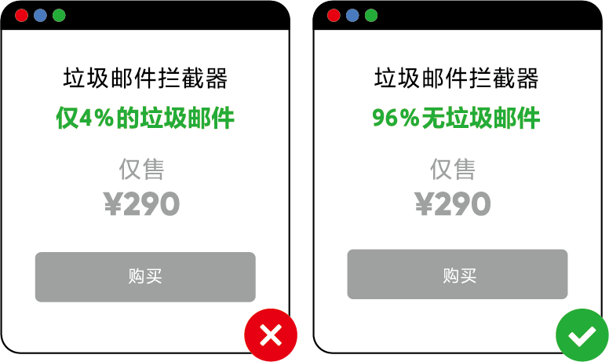
首次引起我们注意后，我们很快就会从很多地方注意到相关信息。 例如，如果某人想购买一辆新车，通常会突然发现到处都是这辆车。
🔺 示例
推动广告系列时，使访问者在不同的营销渠道中接触相同的内容，让别人觉得你的产品周围都是，加深这种新产品的印象。
后视偏见会让人沉迷于“我早就预料到了”这种感受当中，无法真正从事件中汲取到有用的经验，也难以用公平的眼光来评判客观事物和他人，主观上也很容易选择性地忽略许多客观事实。
🔺 示例
后视偏见会给人带来快感，但也会在工作中影响决策的正确性和公平性，从而带来潜在风险。纠正后视偏见的方法就是在知道事情结果之前，记录下自己的想法，事后做验证并统计相关数据。
又称现时偏差，人们更倾向于获取即时收益，而非未来的更大收益。
🔺 示例
为用户的立即购买提供小折扣（或免费送货），而非承诺他们在将来购买时提供更大的折扣。
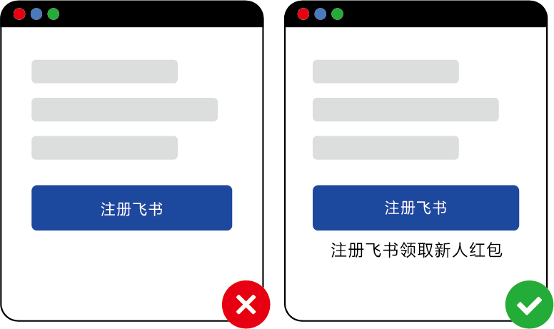
我们倾向于同情一个特定的人而不是匿名的某一个人。
🔺 示例
在讲产品故事时，请使用个体案例，而非一般性陈述。
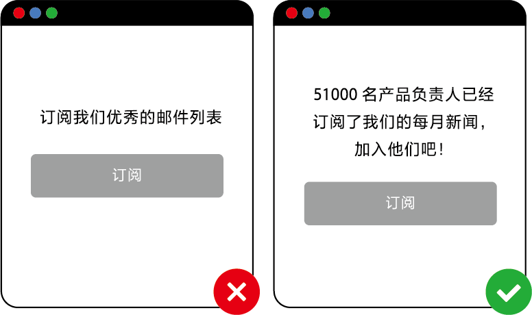
宜家效应是指人们倾向于高度评价他们参与创造的产品，消费者对于一个物品付出的劳动（情感）越多，就越容易高估该物品的价值。
🔺 示例
利用宜家效应提高用户粘性的核心是创造低投入、高回报、高贡献价值的任务，保证用户能够完成任务的基础上贡献自己的价值。在学习场景中我们可以利用宜家效应提高用户粘性，将用户留下来坚持学习。
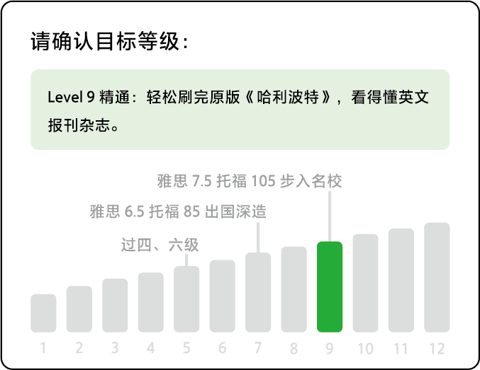
我们倾向于高估未来情绪状态的持续时间或强度。
🔺 示例
描绘在没有你的产品或服务下用户会遭遇的问题，然后，介绍你的产品会如何解决这些问题。
因测量误差所导致的一种偏误现象，有时亦称为观察偏误或分组错误。
🔺 示例
在展示产品或服务时（在网站上或app内），请确保附有详细说明的照片。 在产品说明中获得的信息越多，用户获得的保证就越大。
我们在某件事上投入越多就越难放弃它。因此，我们往往会继续执行这个走向失败的行动，仅仅是因为我们过去已经在此投入了过多的时间、金钱或精力。
🔺 示例
当游戏玩家支付了每月30元的会员费时，很多人会强迫自己继续玩游戏，因为他们已经在虚拟游戏中投入了大量时间和金钱。
指人们面对同样数量的收益和损失时，认为损失更加令他们难以忍受。损失带来的负效用为收益正效用的2至2.5倍。损失厌恶反映了人们的风险偏好并不是一致的，当涉及的是收益时，人们表现为风险厌恶；当涉及的是损失时，人们则表现为风险寻求。
🔺 示例
限制特价交易的时间以产生紧迫感：“此优惠在x小时内结束”。
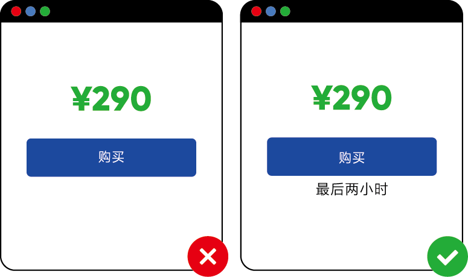
人们会单纯因为自己熟悉某个事物而产生好感。它表明某一外在刺激，仅仅因为呈现的次数越频繁（使个体能够接触到该刺激的机会越多），个体对该刺激将越喜欢。
🔺 示例
坚持使用用户熟悉的 UI 概念、行为、术语、符号和图标。在营销材料、网站和产品上保持一致来优化漏斗，用词保持和行业术语一致，确保你的用户感到舒适。
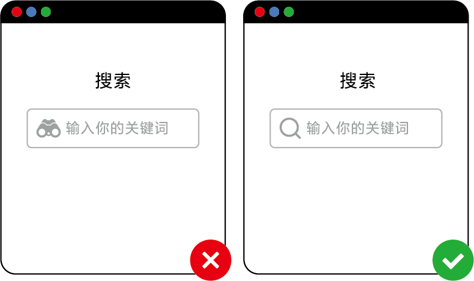
相比于中性或者积极的事物，具有负面影响的事物对人们的心理影响更大。
🔺 示例
通过解决负面体验来说明你的产品价值，如果希望自己的故事能够产生更大的影响,就要尝试多展现情感上负面的内容。
当我们承受压力时，我们没有想到风险发生的可能性。结果，较小的风险可能会被高估或被忽略。
🔺 示例
在转换漏斗中，最小的不确定性可能导致用户对产品的不信任并停止使用。 需要确保所有细节均清晰明了并预先显示，尤其是涉及金钱的事物，例如总成本，折扣（如果存在），附加成本等。
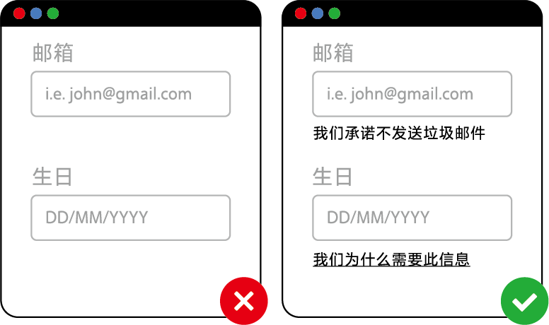
与别人相比，我们经常高估自己成功的几率。
🔺 示例
请确保产品没有隐藏任何可能破坏乐观偏见的令人不愉快的功能（例如额外的费用，可能的延误等）。
我们故意避免负面信息（或与我们的期望不一致的反馈），认为如果我们把头埋在沙子里，它们就会消失。
🔺 示例
与客户支持一起并肩工作，主动去看什么让用户困惑，从处理用户投诉中可以学到很多东西。
我们倾向于低估完成一项任务所需的时间，通常规划谬误会导致时间超支，成本超支或收益不足。将大型任务分解为较小的部分有助于解决这些问题。
🔺 示例
将你的初始估算值乘以2，不，实际上是3。这样做不是因为你懒惰，而是因为你的估计可能是错误的。
当我们感到某人（或某物）试图剥夺或限制我们的选择时，对抗心理就会发生。 当它发生时，我们有一种抵制它并采取相反行动的冲动。
🔺 示例
当你与用户“争论”他的选择时要小心，说服对方时必须循循善诱，永远不要与用户直接对抗。
人们经常会高估自己控制冲动行为的能力。
🔺 示例
我们都认为“标题党”属于旁门左道，但我们还是陷入其中，不是吗？
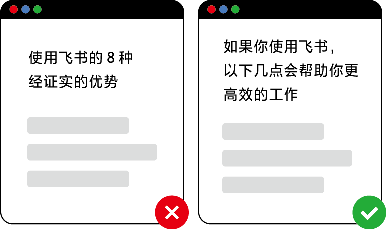
人们会更容易把有韵律的、押韵的句子，当作是真实和准确的。一句话只要变得有韵律了，那么就更有说服力了。
🔺 示例
大部分广告语都朗朗上口，非常洗脑。
所以，尽可能的把你的产品文案变得有韵律感，这样更容易说服用户。
也称佩尔兹曼效应。当我们感觉到更大的风险时，我们会变得更加谨慎，而当我们受到更多保护时，我们就会没那么谨慎。
所以当我们知道在已经采取了很多安全措施以后，我们更有可能采取冒险的方式行事。
🔺 示例
在购买或注册前让用户对产品产生尽可能的安全感，让他们获得信心和信任。
我们对事物的看法在很大程度上受到期望的影响，当人们集中注意力时，人们会从环境中过滤掉事物。
🔺 示例
产品的转化漏斗并没有在用户登录时开始，而是在用户首次看到你的广告时就开始了。营销信息与产品提供内容之间的不一致会让你的用户大失所望，从而导致转化率的下降。在所有媒介上（漏斗的各个阶段）的消息一致将为用户带来正确的期望，从而提高转化率。
过度关注幸存下来的人或事物，忽略那些被筛选掉的人或事物（可能因为无法观察到），从而得出错误的结论。
🔺 示例
在需求分析和调研过程中，如果忽视了幸存者偏差，很有可能搜集到的数据，体现的仅仅只是少部分用户的需求和想法，最终将伪需求和小众需求当作主要需求来作为设计，从而让产品从一开始就走向万劫不复。
我们喜欢确定性，即使它适得其反。在有其他方案可以降低整个风险的情形下，仍倾向于完全消除某一项风险的偏见。一个例子是刻意降低个人负责领域的风险，可是代价是整个组织风险的上升。
🔺 示例
提供退款保证和无风险试用，以降低风险水平，使你的用户感到安全。
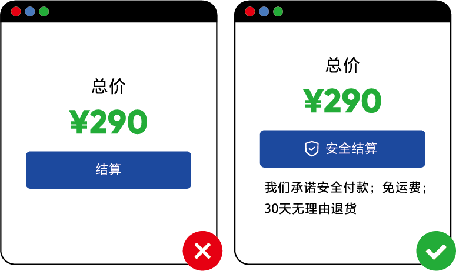
我们根据产品的外观或服务方式来感知其价值。正如人们所说：全部在包装中！
🔺 示例
设计对于产品的成功比你想象的更为重要，多余的空间，错误的边框颜色和未对齐的文字，都会影响转化率，确保UI设计的优先程度。
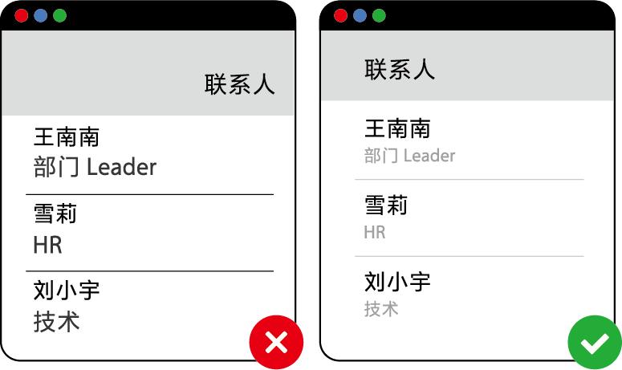
又称选择超载。当出现太多选择时，我们的大脑就会瘫痪，很难进行选择。
🔺 示例
选择太多 = 转换率低
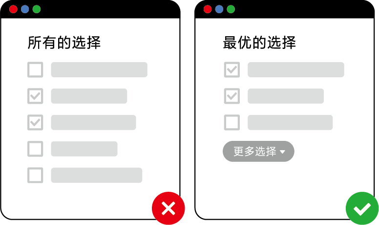
我们将稀缺物品的价值提高，将高可用性物品的价值降低。
害怕错过（FOMO: fear of missing out ）使我们更容易受到诱惑和冲动，并促使我们做出轻率的决定。
🔺 示例
使用“限时优惠”，“有限数量” 等修辞来形容你的产品或服务。给人的印象是许多人正观看此项目，并随时可以抢走最后的几件物品。
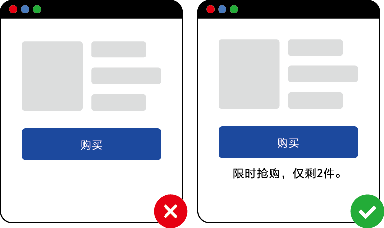
我们认为那些处理速度更快、更流畅、更顺利的事物具有更高的价值。有时不合逻辑的论点在沟通良好的情况下（由有权威和经验的人提出）也可能会赢得胜利。
🔺 示例
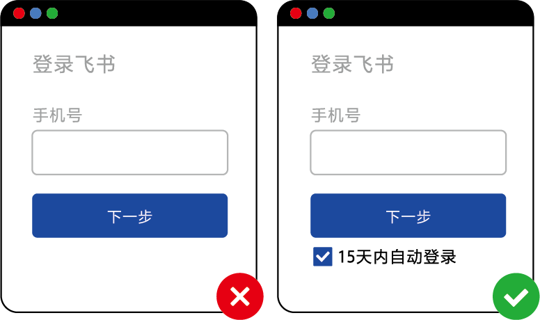
👫社会偏差这些偏差大多是由归因偏差导致。
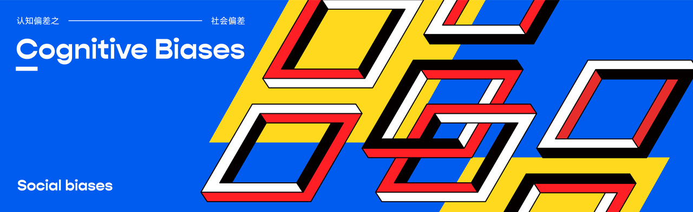
行动者喜欢将他们自己的行为归因于情境性因素，而观察者喜欢将同样的行为归因于行动者稳定的人格素质。
🔺 示例
我们会用外在、不可控的情境性原因来解释自己的行为，比如上班迟到是因为路上出了意外。但是当我们作为观察者，试图对别人的行为进行解释时，我们会用内在的、稳定的人格原因来解释，比如上班迟到是因为他懒、没有时间观念。
我们无法认识到我们缺乏能力，并且由于无法分辨能力好与能力差的不同，因而认为大家都一样。
🔺 示例
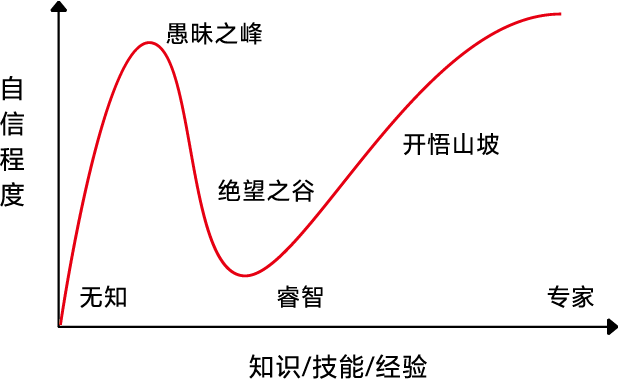
人们倾向于高估别人对自己的认同程度，想象其他人像我们一样，并分享我们的观点，信念，偏好，价值观和习惯，认为所有人以同样的方式思考。
🔺 示例
在没有涉足政坛（或特定国家）的情况下，你最近对你所在国家的选举结果是否感到惊讶？
解释他人行为时，归因于内在特质（一定是他有这样的人格，才做出这样的行为），而非外在情境（也许是情势所迫，或这个场所有特殊的潜规则）。基本归因谬误是矛盾和问题的常见来源，而且这种认知偏差存在于用户也同样存在于设计师本身。
🔺 示例
需要设计师能够清楚地分辨「我的观点」和「我的行为」，能够真正将自己从自己所处的立场、角色、职能上抽离出来，复盘整个局面。首先接纳全部的现实，包括他人的想法、观点，先不去判断对错，明白事物的动态变化过程。不要再单一地去判断，因为任何一个视角必然会存在一个立场，它们是当前事物诸多层面中的一方面而已。
晕轮效应是指使用一个人（或事物）的一种品质来对该人或事物进行整体判断，换句话说，我们对一个人、一个产品、一家公司或一个品牌的最初印象会影响我们对其整体特征的解读。
🔺 示例
通过使用权威照片和可建立信任关系的视觉效果来充分利用这种具有启发式的方法。
群内偏差常被用来引导用户决策，它是指人们会在认知上倾向于自己所属的群体。在体验设计中利用群内偏差的关键点在于打造群体归属感，借由小群体的力量影响用户的决策。
🔺 示例
比如 Booking 在查看评论的区域加入了筛选评论语言这一按钮，虽然设计的本意可能是为了方便用户更好地理解评论内容，但是在真实的使用过程中可以发现，用户更加信任自己所选标签内的评论内容，因为同语言往往意味着来自相同的国家或者相近的文化背景，用户通过这种方式找到一个小群体，然后被影响进而做出与群体内人们更为相似的决策。
我们认为权威人士给出的建议准确性更高，并且更容易受到该建议的影响（即使事物主体与该人物的权威性无关）
🔺 示例
通过宣传产品的知名推荐来建立权威:
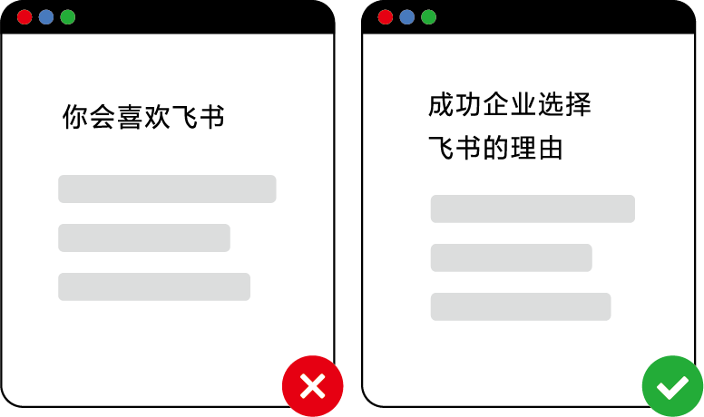
得寸进尺法又译登门坎效应，是一种通过先提出一个简单的小请求来说服用户同意一个较大请求的劝说方法。
🔺 示例
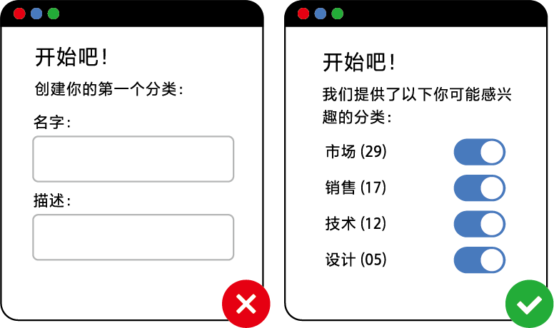
🏹记忆错误与偏差在心理学和认知科学中，记忆偏差是一种认知偏差，导致记忆的强化、弱化（包括能否想起的机会、想起所需的时间，或两者皆有），或者记忆内容的改变。
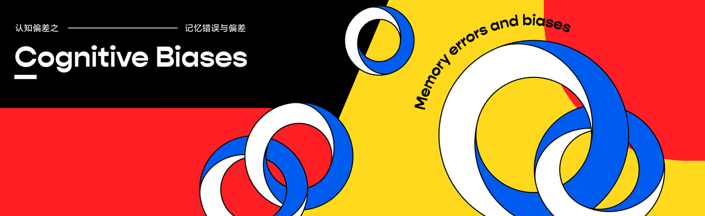
我们会容易忘记可以在网上轻松找到的信息。
🔺 示例
你还记得你最好的朋友或孩子的电话号码吗？
当信息被认为是有趣或幽默时，我们会更好地记住信息。这可以帮助提高产品的转化率，并有助于整体业务的提升。
🔺 示例
在用户可能感到沮丧的情况下不要幽默。例如，如果你的应用与旧设备不兼容，请不要用有趣的方式说出来，因为此时用户可能很沮丧，无法感知幽默。
重复的事情越多，我们就越相信。
🔺 示例
在广告，网站，App Store页面，登录页，新闻通讯等一次又一次地重复你的消息（主要好处，主要区别）
用户不仅仅根据平均或所有体验的总和来评估体验，取而代之的是，他们的大脑会严重地偏向峰值（高或低）和体验的终点，峰值如果是愉悦的话，通常对应了用户旅程中令人难忘的愉悦感。
🔺 示例
通过使产品的最佳功能变得更好，保持产品的竞争优势并提高产品高峰。另外也不要忽视产品的“购买后”体验，确保以精湛的品味结束体验。
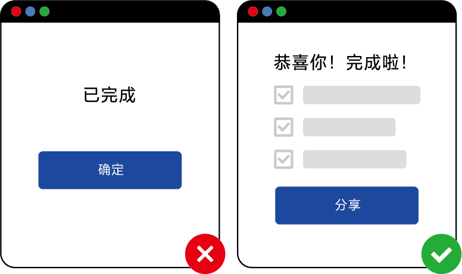
图片和图像比一千个单词更容易被记住。
🔺 示例
始终在内容中包含图像，出色的视觉效果将提高转化率。
又称近时效应、序位效应。列表开头和结尾的项目比中间的项目更容易被用户记住。
🔺 示例
如果你打算展示一长串信息，请确保第一个是最重要的内容。
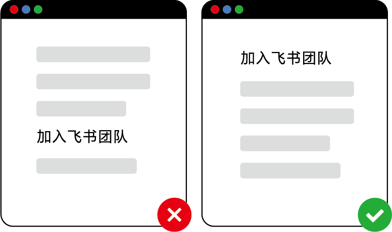
当很多信息一起呈现时，醒目的信息和被特别强调的信息会比其他信息更容易被人们记住。
🔺 示例
确保CTA按钮以不同的样式，大小，颜色和位置显示出来，以达到不同的目的。
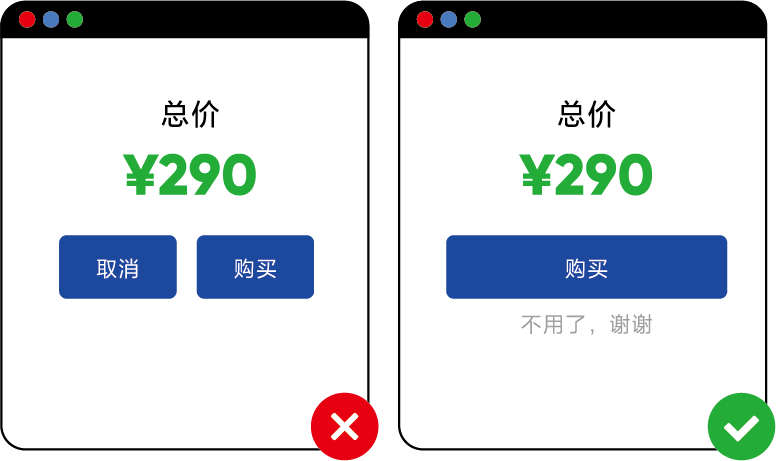
进行中的任务会产生特定于任务的张力。当任务完成时，这种压力可以缓解，但如果任务被中断，它将保持不变。这种张力使相关信息更易于访问和记忆。
🔺 示例
显示一个不完整的进度栏，以鼓励用户实现自己的目标。
📚统计与几率偏差几率性推论是指根据有关几率的资讯推论事情的可能性，而几率的估算通常来自统计资料，因此两者密不可分。
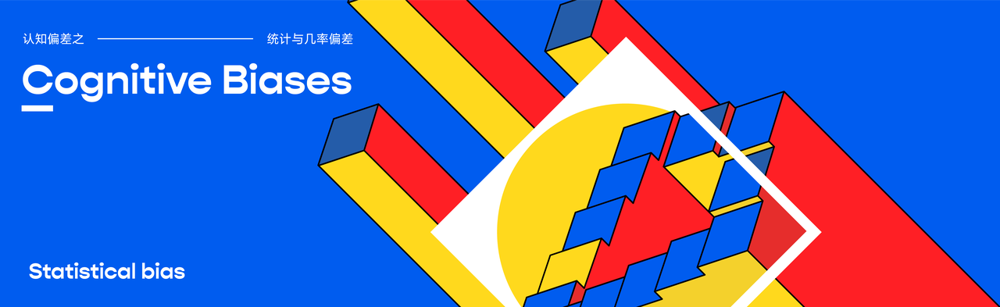
我们倾向于忽略一般信息，而只关注特定案例。
🔺 示例
不要只分享那些冷冰冰的产品信息。相反地，展示其他相关用户或公司的评价、用例。如果你想更具有说服力 —— 把你的量化数据和一些个人故事相结合。用量化数据合理地支持你的观点。具体的例子会在情感上传递你想表达的信息。
我们错误地认为，如果在给定时期内某件事情频繁发生，那么这件事情在将来发生的几率就会很小。
🔺 示例
坚持事实，少依靠直觉，更多的依靠数据。
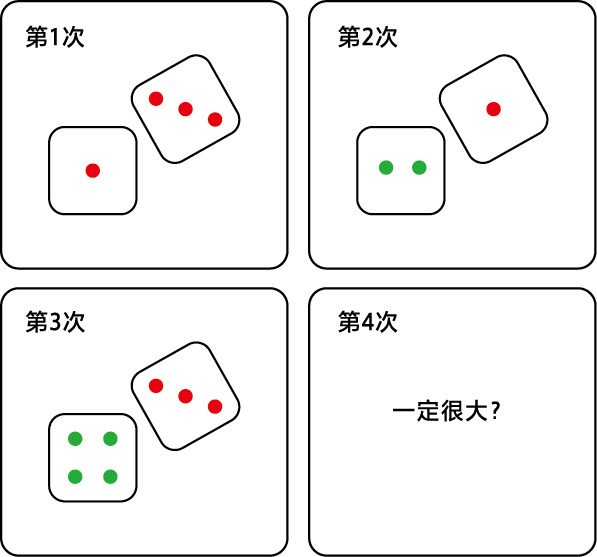
错误地认为经历过成功的人更有可能在其他尝试中进一步获得成功。一般是在某人近来做某事很成功时，认为他未来做同一件事也会很成功，而忽略其成功可能只是随机与巧合导致。
🔺 示例
通过强调一系列成功案例来建立自己的强大品牌。
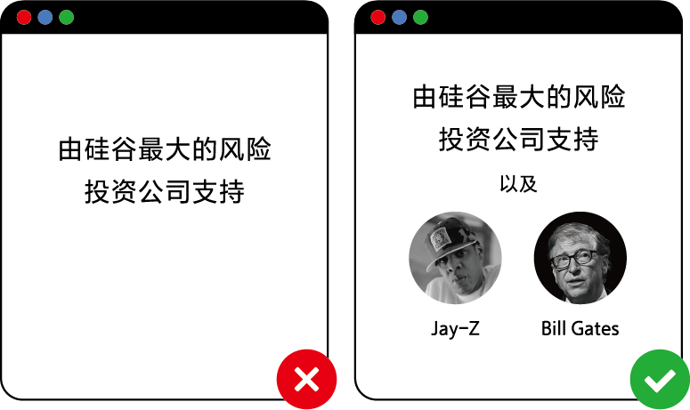
我们经常忽略样本大小并贸然下结论，即使样本数量还未达到足够的统计量。
🔺 示例
与客户沟通很重要，但不要把产品设想建立在几次面谈的基础上。使用大量数据，并根据实际数据而非假设来做出产品决策。
🔬实验与研究偏差这是一些科学实验或统计研究容易发生的偏差。
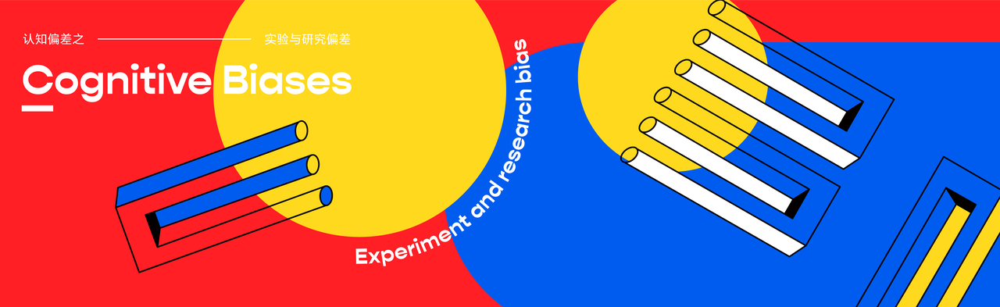
某些类型的用户被无意中从研究参与者池中剔除了。亦可理解为以偏概全，即以局部事例解释整体原因。
🔺 示例
你正在设计自行车跟踪应用，需要对骑行者进行研究。你决定采访并观察北京市的自行车骑行者，但你没有意识到他们的骑行行为习惯可能与居住在山丘多的郊区的骑行者有很大不同。因此你的研究成果可能有不适用于所有目标受众的风险。
研究者有时可能会期望出现某种结果，他们无意识地操纵了试验过程，或者错误地解释实验结果，导致研究结果严重歪曲。
🔺 示例
在用户研究中，研究者的表情、肢体语言等都可能会反映出自己所期待的结果，如果用户察觉到了这些，就可能做一些迎合研究者期望的反应。
我们倾向于多表达符合社会期许的事情，而隐瞒那些不符合社会预期的事情。例如在询问是否有不良嗜好、性伴侣数量时，大家会有意无意地隐瞒或淡化实情。
🔺 示例
社会证明是建立信任的好方法。以下是可在产品页面上使用的一些示例：
不要说“我们很棒，因为……”，而是通过其他人来证实。
当获得的奖励出乎意料之外，我们获得奖励的喜悦感就会增加。
🔺 示例
为用户提供每日优惠，免费奖金，奖章，奖品等。每天创建的“动作”越多，用户就越会感受到与产品的联系。